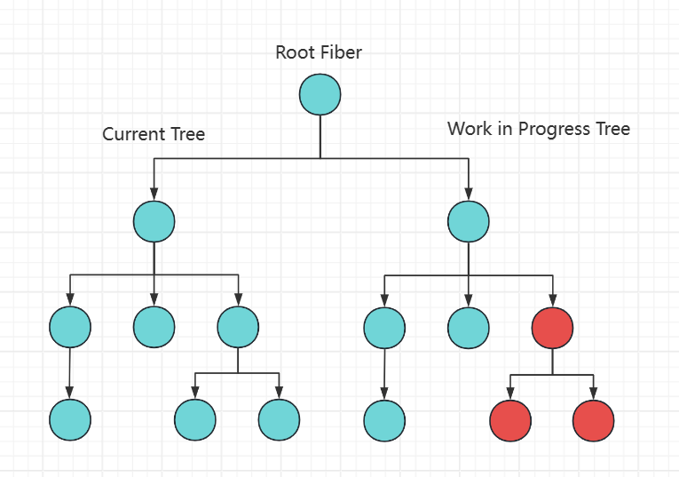

平安蜀黍的前端教程 > React 必学知识点 > React FIBER 架构的原理与工作模式
Fiber 是什么？
我们之前了解过，React 会将我们写入的 JSX 代码转换成元素的对象结构，举个例子：
const element = <div>其它元素</div>;
上面的代码会被 React 转换成一个 JS 对象用于创建一个内部实例来追踪这个组件的所有信息和状态：
const element = React.createElement('div', null, '其它元素');
上面这个 JS 对象我们之前都是称之为React DOM或者虚拟 DOM 对象，在 Fiber 架构中，这个 JS 对象就被称之为Fiber。
所以，我们基本上可以说：Fiber 是一个 JavaScript 对象，它代表 React 的一个工作单元，它包含了与组件相关的所有信息。以上面的 JS 对象举例，我们看看一个 Fiber 对象的样子：
{
type: 'div', // 组件类型
key: null, // key 具有唯一性的组件标识
props: { ... }, // 组件创建时传入的状态集
state: { ... }, // 组件自身的状态集
child: Fiber | null, // 子元素的Fiber
sibling: Fiber | null, // 兄弟元素的Fiber
return: Fiber | null, // 父元素的Fiber
// ...其它属性
}
当 React 开始运行时，它会沿着 Fiber 的树形结构向下执行，试图完成每个 Fiber 的工作，比如：比较新旧 props 以确定是否需要更新组件等。如果这个时候主线程接到了更重要的工作，比如需要响应用户的输入，React 就可以中断当前的工作并返回执行主线程上的任务。
所以，Fiber 不仅仅是代表组件的一个内部对象，它还是 React 的调度和更新机制的核心组成部分。
为什么需要 Fiber
在 React 16 之前的版本中，是使用递归的方式处理组件树更新，称为堆栈调和（Stack Reconciliation），这种方法一旦开始就不能中断，直到整个组件树都被遍历完。这种机制在处理大量数据或复杂视图时可能导致主线程被阻塞，从而使应用无法及时响应用户的输入或其他高优先级任务。
Fiber 的引入改变了这一情况。Fiber 可以理解为是 React 自定义的一个带有链接关系的 DOM 树，每个 Fiber 都代表了一个工作单元，React 可以在处理任何 Fiber 之前判断是否有足够的时间完成该工作，并在必要时中断和恢复工作。
Fiber 的结构
我们来看一下源码里 FiberNode 的结构：
function FiberNode(
tag: WorkTag,
pendingProps: mixed,
key: null | string,
mode: TypeOfMode
) {
// 基本属性
this.tag = tag; // 描述此Fiber的启动模式的值（LegacyRoot = 0; ConcurrentRoot = 1）
this.key = key; // React key
this.elementType = null; // 描述React元素的类型。例如，对于JSX<App />，elementType是App
this.type = null; // 组件类型
this.stateNode = null; // 对于类组件，这是类的实例；对于DOM元素，它是对应的DOM节点。
// Fiber链接
this.return = null; // 指向父Fiber
this.child = null; // 指向第一个子Fiber
this.sibling = null; // 指向其兄弟Fiber
this.index = 0; // 子Fiber中的索引位置
this.ref = null; // 如果组件上有ref属性，则该属性指向它
// Props & State
this.pendingProps = pendingProps; // 正在等待处理的新props
this.memoizedProps = null; // 上一次渲染时的props
this.updateQueue = null; // 一个队列，包含了该Fiber上的状态更新和副作用
this.memoizedState = null; // 上一次渲染时的state
this.dependencies = null; // 该Fiber订阅的上下文或其他资源的描述
// 工作模式
this.mode = mode; // 描述Fiber工作模式的标志（例如Concurrent模式、Blocking模式等）。
// 副作用
this.effectTag = NoEffect;
this.nextEffect = null; // 链表中通往下一个具有副作用的Fiber的快速通道
// 下面这两个变量用于标识出当前Fiber树中有副作用的第一个和最后一个Fiber, 这样当我们重复使用当前Fiber进行渲染时可以使用链表中的片断
this.firstEffect = null;
this.lastEffect = null;
this.expirationTime = NoWork; // 当前组件渲染完成所需要的时间(不包括子组件中找到的)
this.childExpirationTime = NoWork; // 子组件渲染完成所需要的时间
this.alternate = null; // Current Tree和Work-in-progress (WIP) Tree的互相指向对方tree里的对应单元
// 如果启用了性能分析
if (enableProfilerTimer) {
// ……
}
// 开发模式中
if (__DEV__) {
// ……
}
}
从上面的代码逻辑来看，我们其实可以把 Fiber 理解为一个更强大的虚拟 DOM。
Fiber 工作原理
Fiber 工作原理中最核心的点就是：可以中断和恢复，这个特性增强了 React 的并发性和响应性。
实现可中断和恢复的原因就在于：Fiber 的数据结构里提供的信息让 React 可以追踪工作进度、管理调度和同步更新到 DOM
现在我们来聊聊 Fiber 工作原理中的几个关键点：
单元工作：每个 Fiber 节点代表一个单元，所有 Fiber 节点共同组成一个 Fiber 链表树（有链接属性，同时又有树的结构），这种结构让 React 可以细粒度控制节点的行为。 链接属性：child、sibling 和 return 字段构成了 Fiber 之间的链接关系，使 React 能够遍历组件树并知道从哪里开始、继续或停止工作。Fiber 工作原理中最核心的点就是：可以中断和恢复，这个特性增强了 React 的并发性和响应性。
实现可中断和恢复的原因就在于：Fiber 的数据结构里提供的信息让 React 可以追踪工作进度、管理调度和同步更新到 DOM
现在我们来聊聊 Fiber 工作原理中的几个关键点：
单元工作：每个 Fiber 节点代表一个单元，所有 Fiber 节点共同组成一个 Fiber 链表树（有链接属性，同时又有树的结构），这种结构让 React 可以细粒度控制节点的行为。 链接属性：child、sibling 和 return 字段构成了 Fiber 之间的链接关系，使 React 能够遍历组件树并知道从哪里开始、继续或停止工作。Fiber 工作原理中最核心的点就是：可以中断和恢复，这个特性增强了 React 的并发性和响应性。
实现可中断和恢复的原因就在于：Fiber 的数据结构里提供的信息让 React 可以追踪工作进度、管理调度和同步更新到 DOM
现在我们来聊聊 Fiber 工作原理中的几个关键点：
单元工作：每个 Fiber 节点代表一个单元，所有 Fiber 节点共同组成一个 Fiber 链表树（有链接属性，同时又有树的结构），这种结构让 React 可以细粒度控制节点的行为。 链接属性：child、sibling 和 return 字段构成了 Fiber 之间的链接关系，使 React 能够遍历组件树并知道从哪里开始、继续或停止工作。

双缓冲技术： React 在更新时，会根据现有的 Fiber 树（Current Tree）创建一个新的临时树（Work-in-progress (WIP) Tree），WIP-Tree 包含了当前更新受影响的最高节点直至其所有子孙节点。Current Tree 是当前显示在页面上的视图，WIP-Tree 则是在后台进行更新，WIP-Tree 更新完成后会复制其它节点，并最终替换掉 Current Tree，成为新的 Current Tree。因为 React 在更新时总是维护了两个 Fiber 树，所以可以随时进行比较、中断或恢复等操作，而且这种机制让 React 能够同时具备拥有优秀的渲染性能和 UI 的稳定性。

State 和 Props：memoizedProps、pendingProps 和 memoizedState 字段让 React 知道组件的上一个状态和即将应用的状态。通过比较这些值，React 可以决定组件是否需要更新，从而避免不必要的渲染，提高性能。 副作用的追踪：flags 和 subtreeFlags 字段标识 Fiber 及其子树中需要执行的副作用，例如 DOM 更新、生命周期方法调用等。React 会积累这些副作用，然后在 Commit 阶段一次性执行，从而提高效率。
Fiber工作流程
了解了Fiber的工作原理后，我们可以通过阅读源码来加深对Fiber的理解。React Fiber的工作流程主要分为两个阶段：
第一阶段：Reconciliation（调和）
目标: 确定哪些部分的UI需要更新。 原理: 这是React构建工作进度树的阶段，会比较新的props和旧的Fiber树来确定哪些部分需要更新。 调和阶段又分为三个小阶段：
一 创建与标记更新节点：beginWork
1. 判断Fiber节点是否要更新：
// packages/react-reconciler/src/ReactFiberBeginWork.js
// 以下只是核心逻辑的代码，不是beginWork的完整源码
function beginWork(
current: Fiber | null,
workInProgress: Fiber,
renderLanes: Lanes,
): Fiber | null {
if (current !== null) {
// 这是旧节点，需要检查props和context是否有变化再确认是否需要更新节点
const oldProps = current.memoizedProps;
const newProps = workInProgress.pendingProps;
if(oldProps !== newProps || hasLegacyContextChanged()) {
didReceiveUpdate = true; // props和context有变化，说明节点有更新
} else {
// 其它特殊情况的判断
}
} else {
didReceiveUpdate = false; // 这是新节点，要创建，而不是更新
}
workInProgress.lanes = NoLanes; // 进入beginWork表示开始新的工作阶段，所以要把旧的workInProgress优先级清除掉
switch (workInProgress.tag) {
// 通过workInProgress的tag属性来确定如何处理当前的Fiber节点
// 每一种tag对应一种不同的Fiber类型，进入不同的调和过程（reconcileChildren()）
case IndeterminateComponent: // 尚未确定其类型的组件
// ……
case LazyComponent: // 懒加载组件
// ……
case FunctionComponent: // 函数组件
// ……
case ClassComponent: // 类组件
// ……
// 其它多种Fiber类型
// case ……
}
}
2. 判断Fiber子节点是更新还是复用
// packages/react-reconciler/src/ReactFiberBeginWork.js
export function reconcileChildren(
current: Fiber | null,
workInProgress: Fiber,
nextChildren: any, // 要调和的新的子元素
renderLanes: Lanes,
) {
if (current === null) {
// 如果current为空，说明这个Fiber是首次渲染，React会为nextChildren生成一组新的Fiber节点
workInProgress.child = mountChildFibers(
workInProgress,
null,
nextChildren,
renderLanes,
);
} else {
// 当current非空时，React会利用现有的Fiber节点（current.child）和新的子元素（nextChildren）进行调和
workInProgress.child = reconcileChildFibers(
workInProgress,
current.child,
nextChildren,
renderLanes,
);
}
}
mountChildFibers和reconcileChildFibers最终会进入同一个方法createChildReconciler，执行 Fiber 节点的调和（处理诸如新的 Fiber 创建、旧 Fiber 删除或现有 Fiber 更新等操作）。而整个 beginWork 完成后，就会进入 completeWork 流程。
二 收集副作用列表：completeUnitOfWork和completeWork
completeUnitOfWork 负责遍历Fiber节点，同时记录了有副作用节点的关系。下面从源码上理解它的工作：
// packages/react-reconciler/src/ReactFiberWorkLoop.js
// 以下只是核心逻辑的代码，不是completeUnitOfWork的完整源码
function completeUnitOfWork(unitOfWork: Fiber): void {
let completedWork: Fiber = unitOfWork; // 当前正在完成的工作单元
do {
const current = completedWork.alternate; // 当前Fiber节点在另一棵树上的版本
const returnFiber = completedWork.return; // 当前Fiber节点的父节点
let next;
next = completeWork(current, completedWork, renderLanes); // 调用completeWork函数
if (next !== null) {
// 当前Fiber还有工作要完成
workInProgress = next;
return;
}
const siblingFiber = completedWork.sibling;
if (siblingFiber !== null) {
// 如果有兄弟节点，则进入兄弟节点的工作
workInProgress = siblingFiber;
return;
}
// 如果没有兄弟节点，回到父节点继续
completedWork = returnFiber;
workInProgress = completedWork;
} while (completedWork !== null);
// 如果处理了整个Fiber树，更新workInProgressRootExitStatus为RootCompleted，表示调和已完成
if (workInProgressRootExitStatus === RootInProgress) {
workInProgressRootExitStatus = RootCompleted;
}
}
completeWork在 completeUnitOfWork 中被调用，下面是 completeWork 的逻辑，主要是根据 tag 进行不同的处理，真正的核心逻辑在 bubbleProperties 里面
// packages/react-reconciler/src/ReactFiberCompleteWork.js
// 以下只是核心逻辑的代码，不是completeWork的完整源码
function completeWork(
current: Fiber | null,
workInProgress: Fiber,
renderLanes: Lanes,
): Fiber | null {
const newProps = workInProgress.pendingProps;
switch (workInProgress.tag) {
// 多种tag
case FunctionComponent:
case ForwardRef:
case SimpleMemoComponent:
bubbleProperties(workInProgress)
return null;
case ClassComponent:
// 省略逻辑
// ……
bubbleProperties(workInProgress)
return null;
case HostComponent:
// 省略逻辑
// ……
return null;
// 多种tag
// ……
}
}
bubbleProperties 为 completeWork 完成了两个工作： 记录Fiber的副作用标志 为子Fiber创建链表 这两个工作都从下面这段代码中看出来：
// packages/react-reconciler/src/ReactFiberCompleteWork.js
// 以下只是核心逻辑的代码，不是bubbleProperties的完整源码
function bubbleProperties(completedWork: Fiber) {
const didBailout =
completedWork.alternate !== null &&
completedWork.alternate.child === completedWork.child; // 当前的Fiber与其alternate（备用/上一次的Fiber）有相同的子节点，则跳过更新
let newChildLanes = NoLanes; // 合并后的子Fiber的lanes
let subtreeFlags = NoFlags; // 子树的flags。
if (!didBailout) {
// 没有bailout，需要冒泡子Fiber的属性到父Fiber
let child = completedWork.child;
// 遍历子Fiber，并合并它们的lanes和flags
while (child !== null) {
newChildLanes = mergeLanes(
newChildLanes,
mergeLanes(child.lanes, child.childLanes),
);
subtreeFlags |= child.subtreeFlags;
subtreeFlags |= child.flags;
child.return = completedWork; // Fiber的return指向父Fiber，确保整个Fiber树的一致性
child = child.sibling;
}
completedWork.subtreeFlags |= subtreeFlags; // 合并所有flags（副作用）
} else {
// 有bailout，只冒泡那些具有“静态”生命周期的flags
let child = completedWork.child;
while (child !== null) {
newChildLanes = mergeLanes(
newChildLanes,
mergeLanes(child.lanes, child.childLanes),
);
subtreeFlags |= child.subtreeFlags & StaticMask; // 不同
subtreeFlags |= child.flags & StaticMask; // 不同
child.return = completedWork;
child = child.sibling;
}
completedWork.subtreeFlags |= subtreeFlags;
}
completedWork.childLanes = newChildLanes; // 获取所有子Fiber的lanes。
return didBailout;
}
调和阶段知识拓展
1、为什么Fiber架构更快？
在上面这段代码里，我们还可以看出来为什么Fiber架构比以前的递归DOM计算要快：flags 或 subtreeFlags 是16进制的标识，在这里进行按位或(|)运算后，可以记录当前节点本身和子树的副作用类型，通过这个运算结果可以减少节点的遍历，举一个简单的例子说明：
2、调和过程可中断
前面我们提到，调和过程可以被中断，现在我们就看看源码里是怎么进行中断和恢复的。首先，我们要明确可中断的能力是React并发模式（Concurrent Mode）的核心，这种能力使得React可以优先处理高优先级的更新，而推迟低优先级的更新。
可以从下面这段代码理解中断与恢复的处理逻辑：
// packages/react-reconciler/src/ReactFiberWorkLoop.js
// 以下只是核心逻辑的代码，不是renderRootConcurrent的完整源码
function renderRootConcurrent(root: FiberRoot, lanes: Lanes) {
// 保存当前的执行上下文和 dispatcher
const prevExecutionContext = executionContext;
executionContext |= RenderContext;
const prevDispatcher = pushDispatcher(root.containerInfo);
const prevCacheDispatcher = pushCacheDispatcher();
if (workInProgressRoot !== root || workInProgressRootRenderLanes !== lanes) {
// 如果当前的工作进度树与传入的 root 或 lanes 不匹配，我们需要为新的渲染任务准备一个新的堆栈。
// ……
}
// 持续的工作循环，除非中断发生，否则会一直尝试完成渲染工作
outer: do {
try {
if (
workInProgressSuspendedReason !== NotSuspended &&
workInProgress !== null
) {
// 如果当前的工作进度是由于某种原因而被挂起的，并且仍然有工作待处理，那么会处理它
const unitOfWork = workInProgress;
const thrownValue = workInProgressThrownValue;
// 根据不同挂起原因，进行中断、恢复等计算
resumeOrUnwind: switch (workInProgressSuspendedReason) {
case SuspendedOnError: {
// 如果工作因错误被挂起，那么工作会被中断，并从最后一个已知的稳定点继续
// ……省略逻辑
break;
}
case SuspendedOnData: {
// 工作因等待数据（通常是一个异步请求的结果）而被挂起，
// ……省略逻辑
break outer;
}
case SuspendedOnInstance: {
// 将挂起的原因更新为SuspendedOnInstanceAndReadyToContinue并中断工作循环，标记为稍后准备好继续执行
workInProgressSuspendedReason = SuspendedOnInstanceAndReadyToContinue;
break outer;
}
case SuspendedAndReadyToContinue: {
// 表示之前的挂起工作现在已经准备好继续执行
if (isThenableResolved(thenable)) {
// 如果已解析，这意味着需要的数据现在已经可用
workInProgressSuspendedReason = NotSuspended;
workInProgressThrownValue = null;
replaySuspendedUnitOfWork(unitOfWork); // 恢复执行被挂起的工作
} else {
workInProgressSuspendedReason = NotSuspended;
workInProgressThrownValue = null;
throwAndUnwindWorkLoop(unitOfWork, thrownValue); // 继续循环
}
break;
}
case SuspendedOnInstanceAndReadyToContinue: {
// ……省略部分逻辑
const isReady = preloadInstance(type, props);
if (isReady) {
// 实例已经准备好
workInProgressSuspendedReason = NotSuspended; // 该fiber已完成，不需要再挂起
workInProgressThrownValue = null;
const sibling = hostFiber.sibling;
if (sibling !== null) {
workInProgress = sibling; // 有兄弟节点，开始处理兄弟节点
} else {
// 没有兄弟节点，回到父节点
const returnFiber = hostFiber.return;
if (returnFiber !== null) {
workInProgress = returnFiber;
completeUnitOfWork(returnFiber); // 收集副作用，前面有详细介绍
} else {
workInProgress = null;
}
}
break resumeOrUnwind;
}
}
// 还有其它case
}
}
workLoopConcurrent(); // 如果没有任何工作被挂起，那么就会继续处理工作循环。
break;
} catch (thrownValue) {
handleThrow(root, thrownValue);
}
} while (true);
// 重置了之前保存的执行上下文和dispatcher，确保后续的代码不会受到这个函数的影响
resetContextDependencies();
popDispatcher(prevDispatcher);
popCacheDispatcher(prevCacheDispatcher);
executionContext = prevExecutionContext;
// 检查调和是否已完成
if (workInProgress !== null) {
// 未完成
return RootInProgress; // 返回一个状态值，表示还有未完成
} else {
// 已完成
workInProgressRoot = null; // 重置root
workInProgressRootRenderLanes = NoLanes; // 重置Lane
finishQueueingConcurrentUpdates(); // 处理队列中的并发更新
return workInProgressRootExitStatus; // 返回当前渲染root的最终退出状态
}
}
第二阶段：Commit（提交） 目标: 更新DOM并执行任何副作用。 原理: 遍历在Reconciliation阶段创建的副作用列表进行更新。 源码里 commitRoot 和 commitRootImpl 是提交阶段的入口方法，在两个方法中，可以看出来提交阶段也有三个核心小阶段，我们一一讲解：
1、遍历副作用列表：BeforeMutation
// packages/react-reconciler/src/ReactFiberCommitWork.js
// 以下只是核心逻辑的代码，不是commitBeforeMutationEffects的完整源码
export function commitBeforeMutationEffects(
root: FiberRoot,
firstChild: Fiber,
): boolean {
nextEffect = firstChild; // nextEffect是遍历此链表时的当前fiber
commitBeforeMutationEffects_begin(); // 遍历fiber，处理节点删除和确认节点在before mutation阶段是否有要处理的副作用
const shouldFire = shouldFireAfterActiveInstanceBlur; // 当一个焦点元素被删除或隐藏时，它会被设置为 true
shouldFireAfterActiveInstanceBlur = false;
focusedInstanceHandle = null;
return shouldFire;
}
2、正式提交： CommitMutation
// packages/react-reconciler/src/ReactFiberCommitWork.js
// 以下只是核心逻辑的代码，不是commitMutationEffects的完整源码
export function commitMutationEffects(
root: FiberRoot,
finishedWork: Fiber,
committedLanes: Lanes,
) {
// lanes和root被设置为"in progress"状态，表示它们正在被处理
inProgressLanes = committedLanes;
inProgressRoot = root;
// 递归遍历Fiber，更新副作用节点
commitMutationEffectsOnFiber(finishedWork, root, committedLanes);
// 重置进行中的lanes和root
inProgressLanes = null;
inProgressRoot = null;
}
3、处理layout effects: commitLayout
// packages/react-reconciler/src/ReactFiberCommitWork.js
export function commitLayoutEffects(
finishedWork: Fiber,
root: FiberRoot,
committedLanes: Lanes,
): void {
inProgressLanes = committedLanes;
inProgressRoot = root;
// 创建一个current指向就Fiber树的alternate
const current = finishedWork.alternate;
// 处理那些由useLayoutEffect创建的layout effects
commitLayoutEffectOnFiber(root, current, finishedWork, committedLanes);
inProgressLanes = null;
inProgressRoot = null;
}
从源码里我们可以看到，一旦进入提交阶段后，React是无法中断的。
以上关于 Fiber 的解释是我阅读了 React 原码及结合网络上的一些文章做的一个相对简单的描述。因为课时的限制，我们无法在这里对 Fiber 进行更深入的研究，只能确保你们在学习完这一课后对 Fiber 会有一个整体上的认知，并且以后阅读到网上其它关于 Fiber 架构的文章时，不再会因为基础知识而困惑，可以根据已有的思路轻松地拓展你们脑子里关于 Fiber 架构的知识体系。
相关阅读推荐： ReactFiber.js(React16.12.0 原码) 从 React16 生命周期到 React fiber 架构 React Fiber 架构原理：关于 Fiber 树的一切 React Fiber 架构原理 —— 自底向上盘一盘 Scheduler